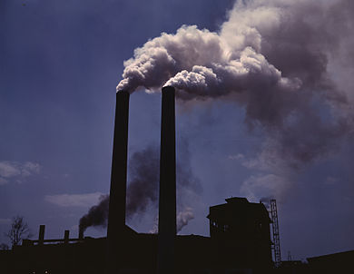
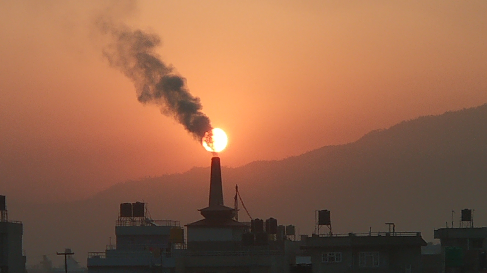
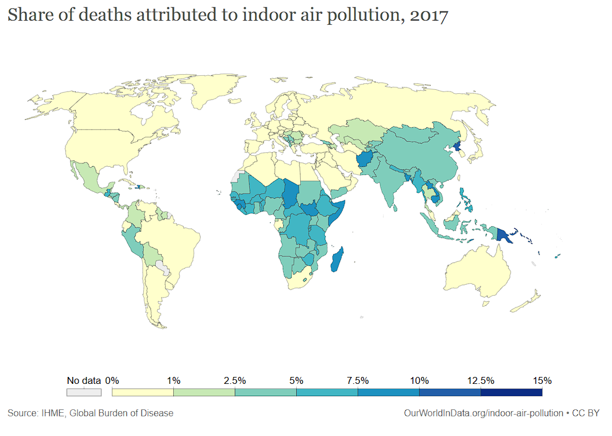
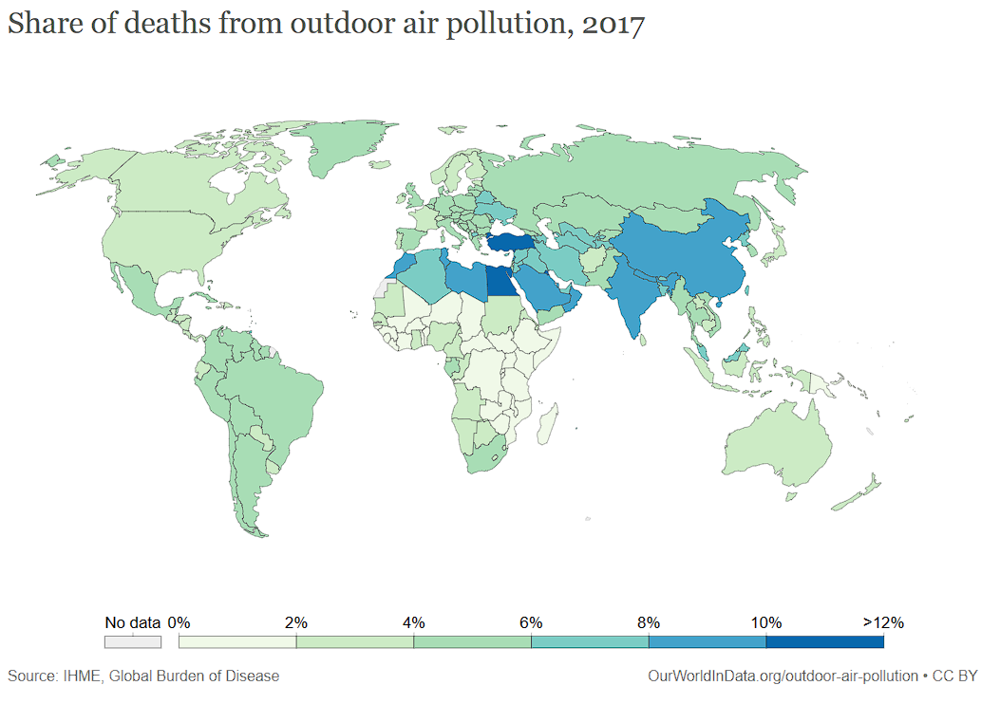
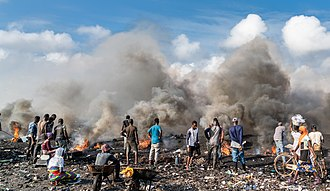
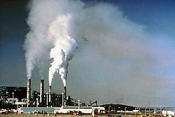
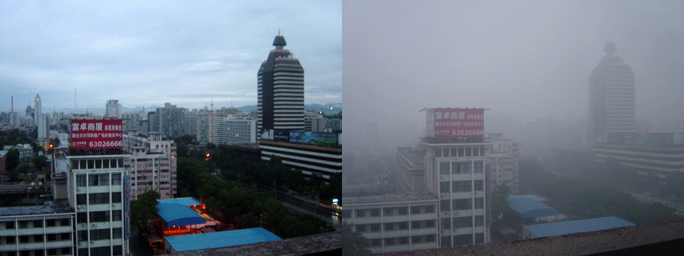
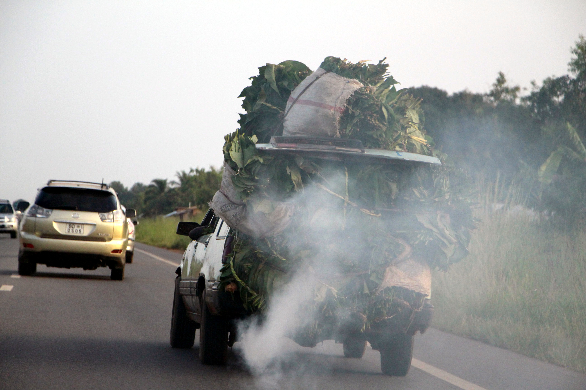
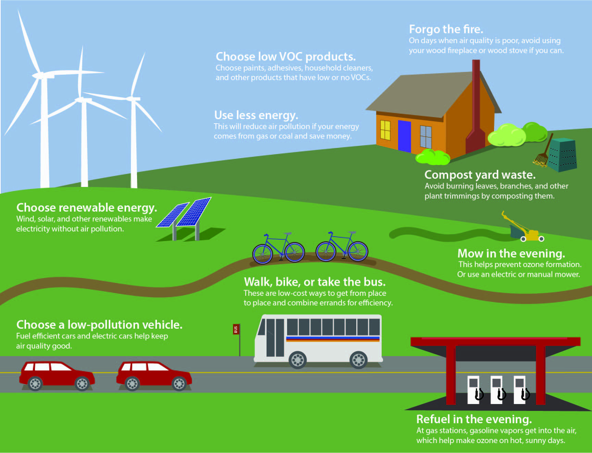
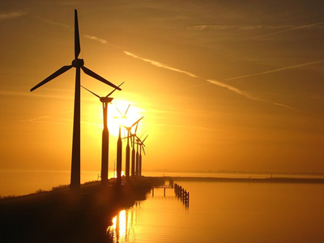

Welcome to our Air Pollution Control Website
Learn about the causes, effects, and solutions to air pollution.
Stay informed and take action to help create a cleaner and healthier environment.
Air pollution is contamination of the indoor or outdoor environment by any chemical, physical or biological agent that modifies the natural characteristics of the atmosphere.
Household combustion devices, motor vehicles, industrial facilities and forest fires are common sources of air pollution. Pollutants of major public health concern include particulate matter, carbon monoxide, ozone, nitrogen dioxide and sulfur dioxide. Outdoor and indoor air pollution cause respiratory and other diseases and are important sources of morbidity and mortality.
By understanding the root causes of air pollution and its detrimental effects, we develop tailored approaches that empower individuals, communities, and organizations to take action. Our services range from educational campaigns and awareness programs to implementing sustainable practices and technologies. Join us in our mission to breathe cleaner air and build a sustainable future.

Indoor air quality monitoring is the process of gathering continuous data on the particles, gasses, and chemicals present in your air. The goal of collecting this data is to identify trends, spot problem areas, and make adjustments accordingly. Building owners, facility managers, and technicians may introduce monitoring to reduce airborne disease risk, identify areas that inhibit occupant wellbeing, and detect anomalies like mold growth.

Outdoor air quality monitoring is the process of measuring the quantity and types of pollutants in the atmosphere. This information can be used to improve air quality.
Air quality is measured with the Air Quality Index (AQI). The AQI works like a thermometer that runs from 0 to 500 degrees. Instead of showing changes in temperature, the AQI shows changes in the amount of pollution in the air.

Understand the impact of air pollution on health and the environment.
- Industrial Emissions: Release of pollutants from factories and manufacturing processes. Emission of harmful gases and particles into the air.
- Vehicular Pollution: Exhaust emissions from cars, trucks, and other vehicles. Combustion of fossil fuels contributing to air pollution.
- Deforestation: Removal of trees reduces the natural air purification process. Loss of green cover reduces the absorption of pollutants.
- Agricultural Practices: Use of pesticides and fertilizers can release harmful chemicals into the air. Burning of agricultural residues contributes to air pollution.
- Waste Disposal: Improper disposal and burning of waste materials release pollutants. Landfills produce methane and other harmful gases.
- Burning of Fossil Fuels: Combustion of coal, oil, and natural gas for energy production. Major source of greenhouse gas emissions and air pollutants.
- Construction Activities: Dust and particulate matter released during construction projects. Use of heavy machinery and equipment contributes to air pollution.
- Mining Operations: Release of particulate matter and harmful chemicals during mining. Disruption of soil and natural landscapes contributes to air pollution.
- Power Plants: Emission of pollutants from power generation facilities. Dependence on non-renewable energy sources contributes to air pollution.
- Indoor Sources: Use of certain household products and materials emitting indoor pollutants. Inadequate ventilation in homes leading to the buildup of pollutants.

Explore the various factors contributing to air pollution.
- Respiratory Problems: Increased risk of respiratory diseases such as asthma and chronic bronchitis. Irritation of the respiratory system due to exposure to pollutants.
- Cardiovascular Issues: Elevated risk of heart diseases and cardiovascular problems. Air pollution can contribute to the development of cardiovascular conditions.
- Global Warming: Greenhouse gas emissions contribute to the warming of the Earth's atmosphere. Climate change impacts, including extreme weather events and rising temperatures.
- Acid Rain: Emission of pollutants leads to the formation of acid rain. Acid rain can harm soil, water bodies, and vegetation.
- Water Pollution: Airborne pollutants can deposit into water bodies, causing contamination. Disruption of aquatic ecosystems and harm to aquatic life.
- Loss of Biodiversity: Negative impact on plant and animal species due to pollution. Disruption of ecosystems and loss of biodiversity.
- Harm to Wildlife: Air pollution affects wildlife habitats and can lead to population decline. Birds, mammals, and insects may be adversely affected.
- Visibility Reduction: Formation of haze and smog reduces visibility in urban areas. Impaired visibility poses risks to transportation and public safety.
- Health Impacts on Vulnerable Populations: Children, the elderly, and individuals with pre-existing health conditions are more susceptible to the health effects of air pollution. Increased hospital admissions and healthcare costs.
- Ozone Depletion: Certain air pollutants contribute to the depletion of the ozone layer. Adverse effects on human health and the environment due to increased ultraviolet (UV) radiation.

Discover ways to mitigate and control air pollution.
- Use of Renewable Energy: Transitioning to clean energy sources such as solar, wind, and hydropower reduces reliance on fossil fuels.
- Tree Planting Initiatives: Increasing green spaces and forests helps absorb pollutants and improve air quality.
- Promotion of Public Transport: Encouraging the use of public transportation and reducing individual vehicle emissions.
- Implementation of Stricter Emission Standards: Enforcing regulations on industries and vehicles to limit emissions of harmful pollutants.
- Waste Recycling Programs: Proper waste management and recycling reduce the release of pollutants from landfills and incineration.
- Energy Efficiency: Adopting energy-efficient technologies and practices to reduce overall energy consumption and pollution.
- Green Building Practices: Designing and constructing buildings with environmentally friendly materials and energy-efficient systems.
- Awareness and Education: Informing the public about the impact of air pollution and promoting sustainable practices.
- Research and Innovation: Investing in technologies and innovations that contribute to cleaner air and pollution control.
- International Cooperation: Collaborating on a global scale to address transboundary air pollution and implement effective solutions.
